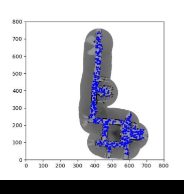
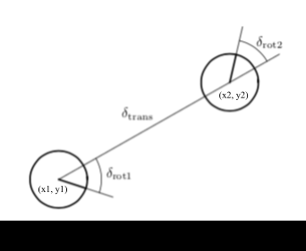
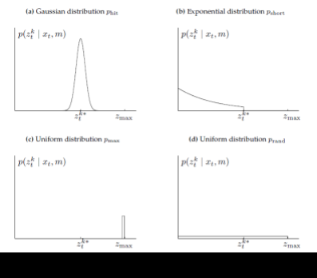
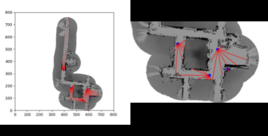
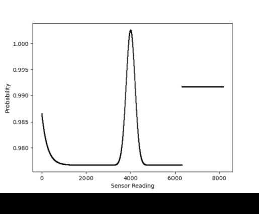

Graduate Coursework · CMU 16-833
Graduate Coursework · CMU 16-833
Robot localization with particle filters.
Monte Carlo localization for a lost indoor robot in Wean Hall, given nothing but odometry, a laser rangefinder, and a map. The robot has no idea where it starts; the filter has to find it.
The problem
This project explores robot localization with particle filters, also known as Monte Carlo localization. A particle filter tracks the state of a dynamic system as a non-parametric implementation of the recursive Bayes filter: instead of carrying a single estimate with a covariance, it carries a cloud of thousands of hypotheses and lets the bad ones die off.
The task is global localization, which is the hard version. The robot is not told roughly where it is and asked to refine that guess. It is dropped somewhere in Wean Hall with no prior, and has to work out its own position from scratch using only wheel odometry and a 180-degree laser scan matched against a known occupancy map.
Particle initialization
We started by initializing particles across the entire map, but that wastes most of them:
you need a very large number before enough land in the narrow corridors where the robot
actually is. So we implemented init_particles_freespace, which seeds particles
only in the free hallway space, putting the population where the answer can plausibly be.

Motion model
We use the odometry motion model from Thrun et al.'s Probabilistic Robotics. It uses relative motion over the interval (t-1, t] to update the robot state from X1 = (x1, y1, θ1) to X2 = (x2, y2, θ2). Those are odometry readings in the robot's internal frame, and their relation to global coordinates is unknown, so we decompose the relative motion into three steps: a rotation δrot1, a translation δtrans, and a second rotation δrot2.

Each step gets Gaussian noise controlled by four robot-specific parameters. Tuning these mattered more than expected. We settled on low rotational noise and relatively higher translational noise, because keeping both at the same value (0.01) increased the motional error in the system, and too much noise overall hurt convergence.
We could only really test the motion model after the sensor model was already converging to a ballpark location. With no noise at all, the motion simply mimicked the odometry data and drifted. With too much noise on both sets, the position would converge but the particles would not travel down the corridor properly. Every successful log we generated used the parameters above.
Sensor model
The sensor model returns the product of individual measurement likelihoods, which become the particle weights. We implemented the beam model of a range finder, which mixes four densities to account for four distinct ways a laser reading goes wrong: small measurement noise around the true value, unexpected objects, outright failure to detect, and unexplained random noise.

Each component earns its place. Unexpected objects, such as a person walking in front of the robot, produce readings shorter than the true value, and that likelihood decreases with range. Sensor failures return the maximum value instead of a real reading. And the uniform component matters most subtly: it prevents any measurement from being assigned zero probability, which would otherwise kill off correct particles on a single bad beam.
Ray casting
To weight a particle, the model compares the robot's actual laser reading against the true range that would be measured from that particle's hypothetical pose in the map. Computing that true range means tracing a ray through the occupancy grid. There are several line-tracing algorithms available, such as DDA; we implemented Bresenham's line algorithm.
For each particle we shift from the particle's position to where the laser is actually mounted on the robot, convert to pixel coordinates, and compute end points for each beam angle from (θ - π/2) to (θ + π/2) out to the maximum laser range. Bresenham gives us the intermediate pixels along that line, and we walk them checking occupancy, treating a probability at or above 0.35 as occupied.

Processing all 180 beams, the ray casting routine is:
Parameter tuning
The sensor model parameters were tuned over many iterations. To build intuition we visualized the net probability distribution by generating a range of fabricated sensor values against an assigned true range, which showed us the likelihood of any individual beam. Below is that distribution for a true range of 4000.

What made this tuning interesting is that nearly every parameter fails in both directions:
- zhit — raising it says the sensor is more accurate, rewarding readings that match the true range. Too high, and particles converge very fast, usually to the wrong place.
- zshort — raising it rewards readings short of the true range. Tricky, because the dataset visibly has a person walking in front of the robot, so short readings are genuinely expected. But too high and particles facing an obstacle in the wrong location survive anyway.
- zmax — set between the uniform random floor and the peak of the Gaussian.
- zrand — tuned to bring likelihoods close to 1 and avoid numerical issues. Set the uniform floor too low against the Gaussian and particles die off fast from tiny weights.
- σhit — widens the Gaussian, giving the model slack around the true range. Slows convergence but makes the filter more robust.
- λshort — scales the short distribution, adjusted alongside zshort.
- max_range — 8191 cm, the largest value observed across all logs. Our ray casting never produced a true range above about 5000 cm, so we treat any reading well above that as an error measurement.
- subsampling — how many of the 180 beams to actually use. We used every 5th; sampling more costs computation time.
Resampling
We implemented both multinomial and low-variance resampling. Multinomial sampling simply draws particles from the multinomial distribution formed by their importance weights. We used low-variance resampling instead: draw a single random number, then select particles at equally spaced intervals from it, rather than drawing M independent random numbers.
This is more systematic and strictly better behaved. If all particles carry the same weight, low-variance sampling reproduces the set exactly, where multinomial sampling can fail and lose diversity by chance. It is survival of the fittest, but without the arbitrary casualties. We also only resample when the robot is actually moving.
Making it fast
Ray casting is by far the most expensive operation, so we precomputed a lookup table: all the intermediate line-tracing pixels for a start point of (0, 0) at every angle, then shifted those precomputed points to each particle's laser position. That bypasses the per-particle, per-orientation ray casting entirely.
We also added multiprocessing in Python, wrapping the filter in a monte_carlo
function run across processes. On a 10-particle test, runtime dropped from 301 seconds to
208, and the gap widens considerably with more particles. That speedup is what made it
practical to test with large particle counts, which in turn made the parameter tuning
iterations fast enough to actually converge on good values.
Results
The filter localizes successfully across three different robot log files, all generated with the parameters listed above.
One honest caveat: we used a random seed for particle generation, and rerunning gave similar performance for a given seed. Logs 2 and 4 were considerably more repeatable than log 1, which needed additional tuning whenever the seed changed. The filter works, but its robustness to initialization is not uniform across the datasets.
Extra credit: the kidnapped robot
The kidnapped robot problem asks what happens when a well-localized robot is picked up and moved somewhere else without being told. We built a version of a log with entries removed to simulate exactly that. Around the kidnap point, the localized particles spread out in all directions, which is the desirable behavior: the filter abandons its now-wrong certainty and widens the search, improving the chance of finding the nearest landmark and relocalizing from consecutive sensor readings.
We also considered adapting the number of particles over time, which would help computationally but is tricky to get right, since it needs a principled criterion for when to shrink the population. Our thinking was to keep the count fixed through resampling, then reduce it proportionally once some threshold number of particles had collapsed onto the same state, retaining the localization information while dropping redundancy.
Future work
- Vectorize the Python implementation for speed.
- Move the heavy computation to the GPU with CUDA or Numba.
- Automatically tune the sensor model parameters by analyzing the log file, rather than by hand.
- Improve overall robustness through better parameter tuning, particularly on the motion model, where we ran into several issues with particle movement.